This is Cheetah Mac, the fastest and coolest cheetah on planet Earth! He is a hero who lives in a small town.

He is always there to protect the world from evil at high speeds (just like a certain blue hedgehog that you might know!) Cheetah Mac can run at a maximum speed of 1000 Miles Per Hour (1609.34 km/h)! He has always wanted to meet someone who could match his speed. Fortunately, that was about to happen. Unfortunately, this new speedster isn’t the nicest one around. It all started when, as Cheetah Mac was running through Speedway Hill, he saw a spaceship. Cheetah Mac went towards the ship and a door started to open up to a strange alien visitor. Or is he? He looks just like Cheetah Mac’s friend, Leopard Joe!
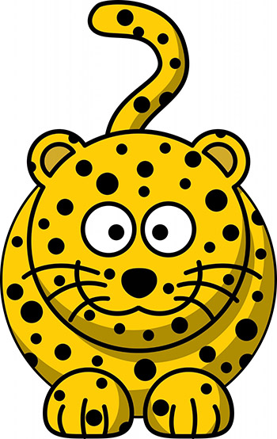“Leopard Joe! What are you doing in that spaceship!?”
“Leopard? I am a cheetah like you Cheetah Mac!”
“Something seems fishy, I don’t think that you’re actually Leopard Joe.”
Suddenly, another Leopard Joe appeared!
”Hey Cheetah Mac! What’s up number one speedster? Wait… Who’s your friend there? He looks just like me!”
“Okay, something fishy is going on here. Okay, I will ask you both a question that only the real Leopard Joe can answer!”
“What is my favorite dessert?” Cheetah Mac asked.
”Uhhhhhhhh… Cupcakes! Everyone on Earth loves cupcakes!”
”No, that’s wrong! What about the other Leopard Joe?”
”That’s an easy one! Pepperoni Sundae!”
”That’s right! You’re the real Leopard Joe!
”Welp, I guess you saw through my disguise to fit in with the Earth creatures, Cheetah Mac! Good job! I will now reveal my true form.
TRANSFORM!
YES!
ALMOST THERE!
”BAM!”
”What happened to you!?”
”This is my TRUE FORM! I am Cheetah Zachrom from the planet Zilazochrome!”
”Zaicrammey? ZIlazazilachroman? I don’t follow!
”My name is Zachrom, pronounced like this: ZACK then ROM! My home planet is Zilazochrome, pronounced like this: Zila, (like a Xylophone but with an A at the end of Xylo instead of O.) Zo, then Chrome.
With that out of the way, I heard about you Cheetah Mac! You think that you’re the fastest around do you? Well you’re wrong! I am the fastest there is in the universe! No one can out run me!”
”Yeah right! Cheetah Mac is the fastest one around! I’m the second fastest and I struggle to keep up with him!”
”Okay, we’ll see about that! I hereby challenge you to a race Cheetah Mac!”
”Oh boy! A race! I accept!”
”Whoever runs around the whole world on this convenient around-the-world race track wins! If you lose, Earth will belong to me! If you somehow manage to win fair and square, I will accept you as the fastest in the universe and leave Earth alone. What do you say?”
”No one can beat me in a race! I’m the fastest there is! I accept! I will win this race for sure!""
With that, Cheetah Mac and Cheetah Zachrom were off to the races with Leopard Joe following behind!
”Okay, if we are going to race, we need a referee…"
”ME! ME! PICK ME!”
”NO! I will NOT accept a referee who is biased against me! I elect someone else! Someone who knows the truth that I will win! The Earth’s famous Duck of Truth!”
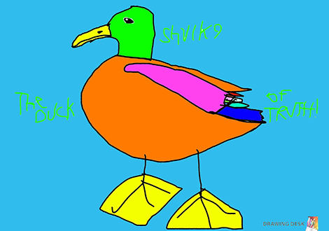”Greetings, I am the Duck of Truth! I know everything or at least almost everything!”
”Wow! It’s the Duck of Truth! He will definitely know that Cheetah Mac will beat Zachrom!”
”NO! I will win! Right Duck!?”
”To be honest, this is not something that I am sure of! However, I put my bets on Cheetah Mac!”
”WHAT!? YOU’RE SAYING THAT I WILL LOSE!? WHAT IS THE MEANING OF THIS!?”
”Come on! Let’s just get this race started! I’m getting bored.”
”Fine, have it your way. It doesn’t matter if the referees are on your side as I will win and take over this entire planet! MWAHAHAHAHAAAAAA!”
”3, 2, 1, GO!”
Cheetah Mac and Cheetah Zachrom bolted through the starting line like lightning! They ran and ran as fast as their legs could carry them! They were running so fast that the scenery blended together in a big blur! (How could they even see where they were going!?)
They zoomed through the space station and Zachrom tried to throw rockets at Cheetah Mac!
”Hey that’s cheating! You’re going to destroy the entire space station and ruin the space launch to a mystery planet!”
”Ha! Like I care! Once I beat you, I can do whatever I want with this planet! Whether I cheat or not, I will still beat you! I just wanted to have a little bit of fun!”
”Destroying spaceships is not fun, Zachrom!”
”Looks like those Cheetahs are having, a race but it looks like one of them is a Cheating Cheetah! Hahahaha!”

“Shut it Frisk!”

“It was probably a werewolf!”

“Stop it Josh!”
Meanwhile, the wolf was about to invade sheep town yet again!
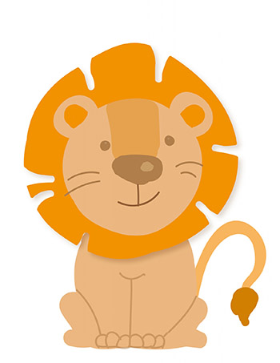”Oh no! That mean wolf is coming to our town again! It looks like it’s time for me to scare him off again!”
Cheetah Mac and Cheetah Zachrom ran through many more places. They blew through the sheep town next, surprising Lenny Lion and the sheep, while scaring away the wolf!
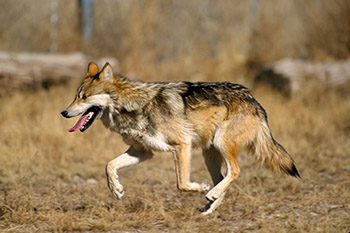”Howl!!!!!!!!!!!!!!!!*”
”… or not?”
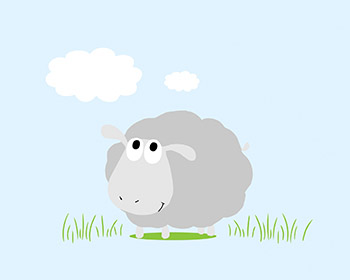”What was that!?”
”It must have been Cheetah Mac! But what was that green thing next to him!?”
The two speedsters then went past a wishing well and ran past the Duck of Truth’s Pond! They then broke the sound barrier causing a loud sonic boom that caused an avalanche to fall onto Cookie The Penguin’s Igloo!
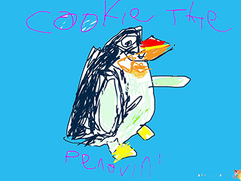”Oh no! Who did this to my home!? It better have not been you, Fret Fox!”
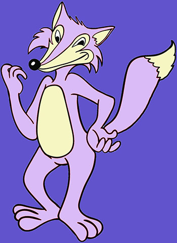”You may not believe me, but it wasn’t me who destroyed your igloo this time! It was Cheetah Mac and Leopard Joe!”
”You better not be lying again like you promised not to!”
”Pant* Pant* I didn’t do it but Fret’s not lying about Cheetah Mac! He is having a race with an alien cheetah who plans on taking over the world! The Duck of Truth is the referee! See you later! I’ve gotta catch up with the racers!”
Leopard Joe ran off.
”Did you catch any of that Fret?”
”Nope!”
Cheetah Mac and Cheetah Zachrom continued to run and run without slowing down!
”I’ve gotta admit, you’re pretty fast, but not fast enough! As you can see, I am only running at 20% max speed!”
”20%!? I’m at about 80% and we’re running at 800 Miles Per Hour (ca. 1247 kilometers per hour) !!! What are you!?”
”Yes! 20% of my maximum speed capabilities! I can show you my maximum speed now if you want!”
”Show me!”
”You’re definitely going to regret that!”
Cheetah Zachrom then zoomed past Cheetah Mac at extreme speeds - five times the speed he was before, putting him at 4000 miles per hour (ca. 6,437 kilometers per hour)! They were halfway across Earth now and at this rate Cheetah Zahrom was going to win!
”Cheetah Mac MAXIMUM SPEED! 100% GO!”
Cheetah Mac was going as fast as his body could carry him! Unfortunately this wasn’t enough! Cheetah Mac was running at 1000 miles per hour (1,609.34 kilometers per hour) while Cheetah Zachrom was running at 4000 miles per hour (ca. 6,437 kilometers per hour)! He was running faster than Cheetah Mac by 3000 miles per hour (ca. 4,828 kilometers per hour) or 400% of Cheetah Mac’s maximum speed! How will Cheetah Mac pull through!? Especially since Cheetah Zachrom decided to build a machine to launch high speed homing missiles back at Cheetah Mac!? He was cheating!
Cheetah Mac began to slow down into a village. It was hopeless, and there was no way to win. Cheetah Mac started to think. The only thing to do was to prepare to stop Zachrom from taking over the world. But he would be too quick for anything, he thought. Luckily, it turned out that the village that Cheetah Mac stopped in was Hachikō Village! Cheetah Mac was in he home of Setsuna Komali, the greatest hero on Earth!
Setsuna approached Cheetah Mac.
“Hey Cheetah Mac! What are you doing here?”
”Setsuna? Oh, I’m in your town… I didn’t notice, sorry.”
”What’s wrong Cheetah Mac? You’re not your usual self. Did something happen?”
”Well…”
Cheetah Mac told Setsuna about the race but got cut off because, soon enough, Leopard Joe caught up to them.
”PANT* PANT* PANT* CHEE-TAH PANT* MAC… PANT* WHAT ARE YOU DOING HERE!? YOU CAN’T LET CHEETAH ZACHROM WIN! The fate of the whole world is on the line! Oh hi Setsuna.”
”Hey Leopard Joe! What’s going on here!? Who is Cheetah Zachrom!? Wait, is he from that alien spaceship I saw in the sky this morning?”
”YES!”
”And let me guess, he is some kind of space cheetah who challenged Cheetah Mac to a race and will take over the world if he wins the race?”
”Exactly! You have some great intuition Setsuna! Also, the Duck of Truth is the referee and he thinks that Cheetah Mac is going to win!”
”Aww, thank you! Wait, why are you here Cheetah Mac, shouldn’t you be trying to beat Zachrom?”
”Not happening.”
”What?”
”He is just too fast. Faster than me. He is running at 4000 miles per hour (ca. 6,437 kilometers per hour) as we speak. It’s hopeless.”
”Cheetah Mac...”
”Well, can’t we just stop him from taking over the world? We can negotiate with him or fight him!”
Yeah Cheetah Mac! With your hyper speed, Setsuna’s strength and intuition, and my ummm… helpfulness, anything’s possible!”
”Nope. Unfortunately, I cannot agree with you Leopard Joe or Setsuna. Zachrom is undefeatable. I’ve always wanted to meet someone who could match my speed but, this guy is just to fast. We have no chance…”
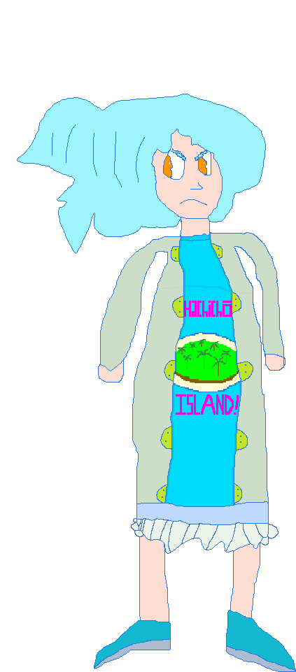”LISTEN TO ME CHEETAH MAC!!! You cannot give up on this race! The whole planet is at stake! You should be ashamed of yourself! You are not the Cheetah Mac that I know! You are one of the greatest heroes on Earth! You have always been determined to help those in need since you were a cub! You became famous around the world for your carefree and determined attitude! Just think of all of the people who you would be letting down by losing this race. You still have a chance to win this! Think of all of your friends. They are all rooting for you! You cannot let them down! You cannot let Leopard Joe down, you cannot make the Duck of Truth’s truth become false, you cannot lose to that space freak and let him take over the world! SHOW THEM WHAT YOU’RE MADE OF, CHEETAH MAC! YOUR FRIENDS ARE YOUR POWER!!!”
”Wow! That speech was so moving that I’m… SPEECHLESS!”
”You're right Setsuna. I am acting like a fool, and I am abandoning my friends and the world!”
Cheetah Mac is then surrounded by a bright yellow glowing light!
”I WILL NEVER ALLOW CHEETAH ZACHROM TO TAKE OVER MY WORLD! NEVER!!!!!!!!!!!!!!!!! TRANSFORM!!!!!!!!!”
” SUPER CHEETAH MAC GOOOOOOOOOOOO!!!!!!!!!!!!”
With a brilliant flash of light, Cheetah Mac became... Super Cheetah Mac!
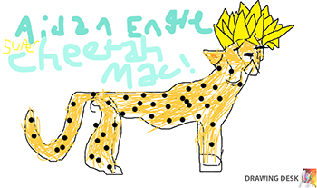”Whoa! What happened to me! I’m glowing yellow! And I have a cool hairdo! I will never lose this race!"
”Whoa! Cheetah Mac! What happened to you!? You’ve turned completely Super!”
”Wow! Cheetah Mac, you have tapped into your hidden Super Power! There’s no way that you can lose now! Go and teach that Cheetah Zachrom a lesson that he will remember!”
”Thank you, Setsuna and Leopard Joe! Now I can catch up to Cheetah Zachrom!”
Super Cheetah Mac ran off at very high speeds in which he has never reached before!
”I am going sooo faaast! I must be going at 10,000 miles per hour (ca. 16,093 kilometers per hour)! No 20,000 (ca. 32,187)! NO 50,000 (ca. 80,467)!!! AAAAAAH I keep getting faster and fasterrrrrrr!”
Meanwhile, Cheetah Zachrom was almost to the finish line!
”Yes! The finish line is so close that I can practically smell it! It looks like the Duck of Truth was wrong after all! Cheetah Mac is just too slow for me, especially with my homing missile launcher! It looks like he gave up! This planet is mine! MWAHAHAHAHAHA!!! Cough* Cough*, Oh. I’m starting to lose my voice. I will have to keep my voice down because I want to be in the best possible condition for when I take over the world!”
Suddenly, a streak of yellow light speeds past Cheetah Zachrom at unimaginable speeds! Zachrom’s missiles then explode one by one, and the launcher suddenly disappeared and laid ahead right in front of Cheetah Zachrom’s eyes!
”What was that light!? It was faster than me and destroyed my missiles! NO! It can’t be!!! Was that Cheetah Mac!? No, he said that his 100% speed was about four times lower than my own! There’s no conceivable way that it could be him.”
“Yes it could be him!”
”What!? Who said that!”
“ME!”
”Super Cheetah Mac!”
”No way!? Super Cheetah Mac!? This can’t be happening! How did you transform!? How fast can you go in that form!?
”To answer your first question, Yes way. Second question, with the power of friendship and determination! Third, I’m not quite sure but I think I can reach light speed in this form!”
”LIGHT SPEED!? NO! THAT’S PREPOSTEROUS! THAT’S
SHOW ME YOUR SPEED NOW!”
”Okie dokie!”
Suddenly, the Duck of Truth, Josh, Laura, Frisk, Jack, Sketchster the Pencil, Sharp Might, Cookie the Penguin, Fret Fox, Lenny Lion, all of the sheep from Sheep Town, the Wolf, Leopard Joe, Pit the Dragon, Chuck the Parrot, Jerry the Pigeon, and Setsuna all appear right in front of Cheetah Zachrom and Cheetah Mac Crosses the finish line.
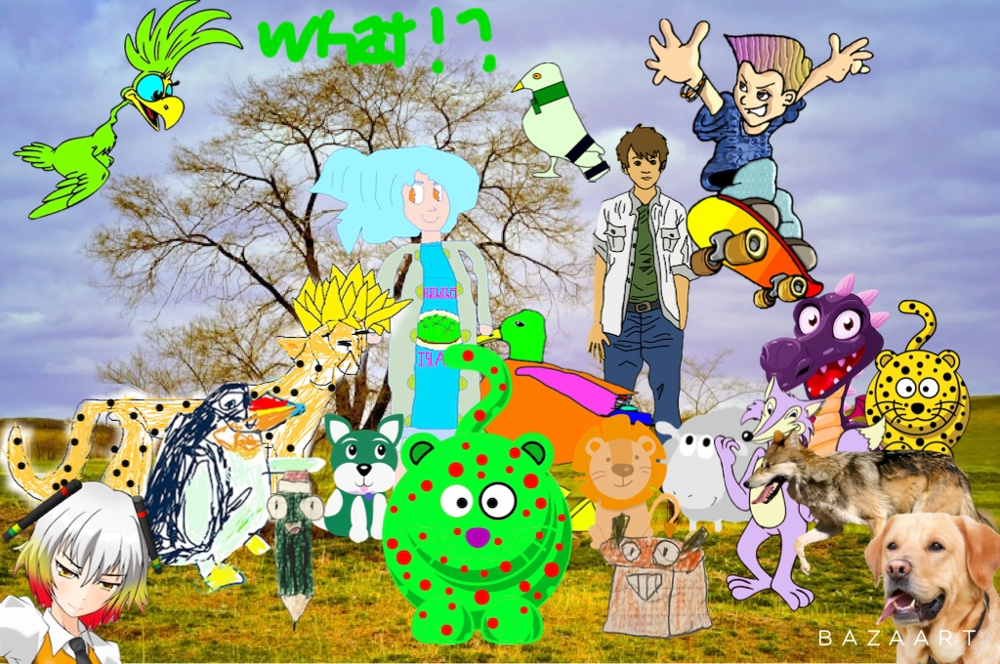“What happened!? Why are all of these people here!? Are these the people that we passed by during our race!? And how did you……………………………………………………….. PASS THE FINISH LINE AND BEAT ME!?!?!?!?!?!?!?!?!?!?!?!? IMPOSSIBLE! You must have cheated!”
”Nah, I think that you’re the cheating cheetah who cheated the race! Hahahaaaaa!”
”Please stop it Frisk!”
”Whoa! Was Cheetah Mac traveling at light speed!? Unbelievable!”
”Whoa! A shining gold werecat!”
“Werecats do not exist Josh!”
”Cheetah Mac… Did you just travel at the speed of light!?”
”This is an outcome that not even I expected!”
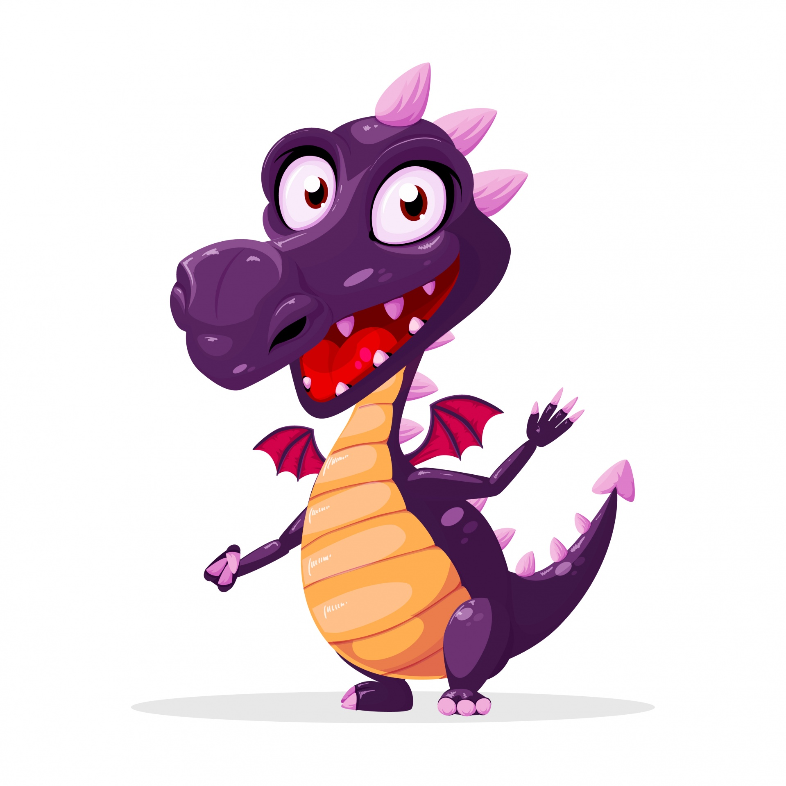“Setsuna! Did you go Super again!?”
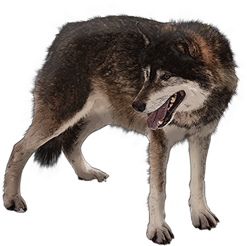“Howl!?”
”This is nuts!”
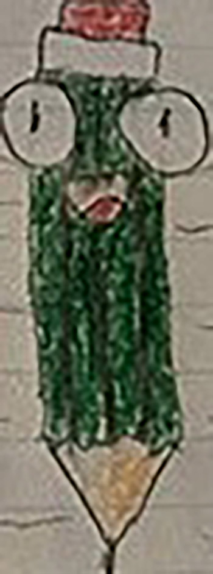“What happened!? Where are we Sharp Might!? I was drawing and now we’re here!”
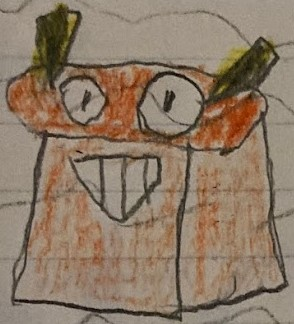“I HAVE NO IDEA SKETCHSTER!”
”Cheetah Mac! You broke my igloo AGAIN!”
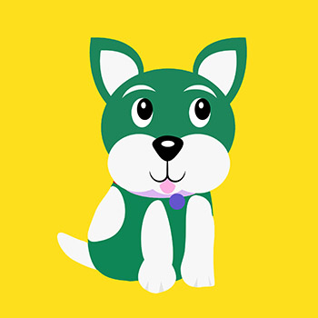“Duck of Truth! Where am I!?"
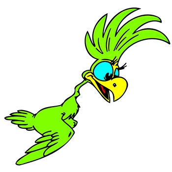”WHAT!? CHEETAH MAC CAN GO SUPER TOO!? Does that mean that he has a Pure Heart? Setsuna has something to do with this, doesn’t she Jerry?”
“COOOO COcooco coocococooccocooooooooo? COOOOOOOOOOOooooOCOOOOOCCCOCCOO CCC000 CC CCICCo0O Probably Chuck!”
”Did you use the wishing well to transform like I did!?”
”This is not a power that belongs to me and I didn’t need a wishing well to obtain this, Lenny. This a power that I received from all of my friends and those who support me. All of the hope and determination surged, creating an awesome power for me to be able to save Earth. This is the power of my friends! And thank you Setsuna, if it wasn’t for your wonderful speech, I would still be in the village and Cheetah Zachrom would have definitely won the race! Thank you for the speech.”
”You’re welcome Cheetah Mac, that’s what friends are for!”
”What about me? I was part of that speech!”
“Oh yeah, thank you Leopard Joe. I wouldn’t be who I am today if you weren’t my sidekick and best friend!”
”Now that’s more like it!”
”So, how did you like that display of my speed Cheetah Zachrom! By the way, you could have won if you didn’t try to cheat with that missile launcher! It slowed you down enough for me to still have time to catch up!”
”This… this, thi… this. THIS WASN’T HOW THINGS WERE SUPPOSED TO GO! WHERE CAN I GO NOW!”
”You can go back to your home planet, can’t you?”
”No. Bad aliens came over to my peaceful planet. We ended up fighting them and now we are enemies. They are a lot stronger than us with their laser guns, so I was sent to try to find a habitable planet. Then I remembered Earth was always a nice planet on our Cheetah Radar. I was ready to go, but I realized that no one would accept me as I am a green cheetah with red spots. No one would like us. We wouldn’t be accepted. So, I thought, what if I took over Earth and made earthlings accept me? However, I failed to realize how determined you earthlings are. And now I lost my bet and have no where to go. I’m sorry, earthlings... goodbye…”
”Hey! Stop right there Cheetah Zachrom!”
”Why? So that you can lock me up with evil pirates and that dragon?”
”No! I’m trying to say that you and your people can come live on Earth! We will accept you for who you are. We don’t care about where you’re from or what you look like as long as you're friendly. Those aliens are evil, and they had no right to steal your planet. Your people should have a place to go! Your kind would fit in perfectly! Just look at our group right now!:
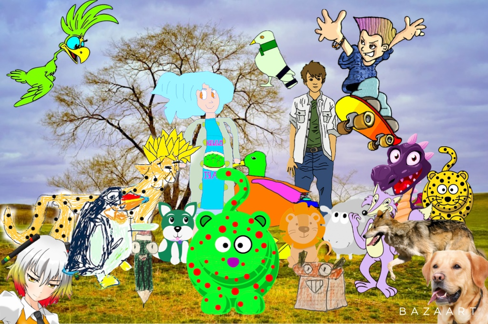
We have orange, pink, blue, cyan. Red, yellow, and green ducks, lions that turn into sheep, purple foxes, talking pencils and sharpeners, and apparently a Super Cheetah now, and we all talk! To us, a green cheetah wouldn’t be that weird at all! Besides, I wouldn’t mind another speedster rival to race! No offense Leopard Joe haha!”
”Oh, you’ll see, Cheetah Mac! I will match your speed someday, just you wait!”
”Thank you so much Cheetah Mac! No one has ever shown me this much kindness before! I will get my people right away. I’m so sorry for trying to take over Earth, I promise that I will never do it again!”
”We forgive you Cheetah Zachrom.”
”We do?”
”Yes, we do Frisk! Be quiet please!”
”Okay Chilly Willy!”
”That is not my name! I am Cookie the Penguin!”
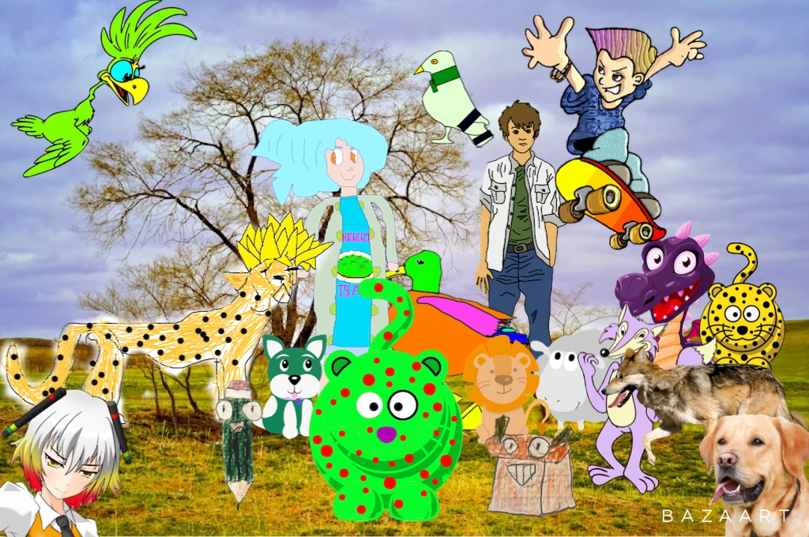All: “Hahahahaha!”
”Ha. Ha. Very funny.”
”Okay, I’m going to go back to Zilazochrome to get my people! I will be back in a few days!
”Okay, be careful with the evil aliens on ZIlazazilachroman!”
”There is no need Cheetah Zachrom! Give me your spaceship GPS!”
”Why?”
“Just give it to me and you’ll see!”
Cheetah Zachrom gave Super Cheetah Mac the GPS from his spaceship and Super Cheetah Mac disappeared from the Earth!
”Where did he go!?”
Suddenly, many space cheetahs from Zilazochrome started appearing everywhere. They were told about what happened and Cheetah Zachrom and his people were happily accepted into Cheetah Mac and Leopard Joe’s village. Cheetah Mac took all of his friends from around the world back to their homes and everyone lived happily ever after.
The End